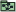
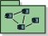

Artifacts >
Artifacts >
 Analysis & Design Artifact Set >
Analysis & Design Artifact Set >
 {More Analysis & Design Artifacts} >
{More Analysis & Design Artifacts} >

Architectural Proof-of-Concept
 Artifacts >
Analysis & Design Artifact Set >
{More Analysis & Design Artifacts} >
Artifact:
| ||||||||||||||
 Architectural Proof-of-Concept |
The Architectural Proof-of-Concept is a solution, which may simply be conceptual, to the architecturally-significant requirements that are identified early in Inception. |
| Role: | Software Architect |
| Optionality: | The Architectural Proof-of-Concept may be omitted when the problem domain is well-understood, the requirements are well-defined, the system is well-precedented, and its development is evaluated as having low risk. |
| More information: | |
| Input to Activities: | Output from Activities: |
The purpose of the Architectural Proof-of-Concept is to determine whether there exists, or is likely to exist, a solution that satisfies the architecturally-significant requirements.
The Architectural Proof-of-Concept may take many forms, for example:
The Architectural Proof-of-Concept is (optionally) developed in the Inception phase to help determine the feasibility of the project, assess the technical risks attaching to its development, and formulate and refine the architecturally-significant requirements.
The Software Architect is responsible for the Architectural Proof-of-Concept.
The decision about whether or not an Architectural Proof-of-Concept is required and what form it should take depends on:
The higher the risk, the more effort needs to be put into this architectural synthesis activity in Inception (with the expectation of more realistic results from the models produced and assessed), so that all stakeholders can be convinced that the basis for committing funds and continuing into Elaboration is credible. However, it has to be recognized that all risks cannot be eliminated in this phase. The Inception phase should not be distorted into a de-facto Elaboration phase.
|
Rational Unified
Process
|